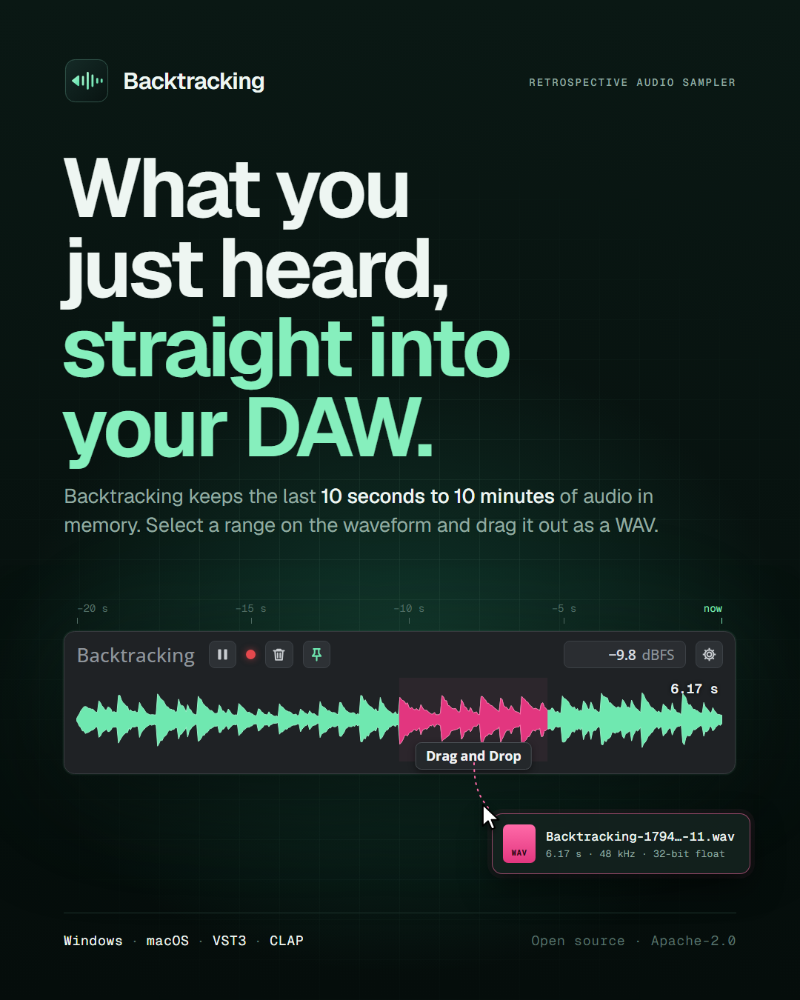
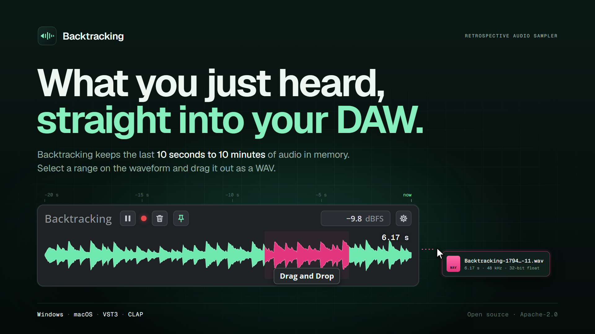
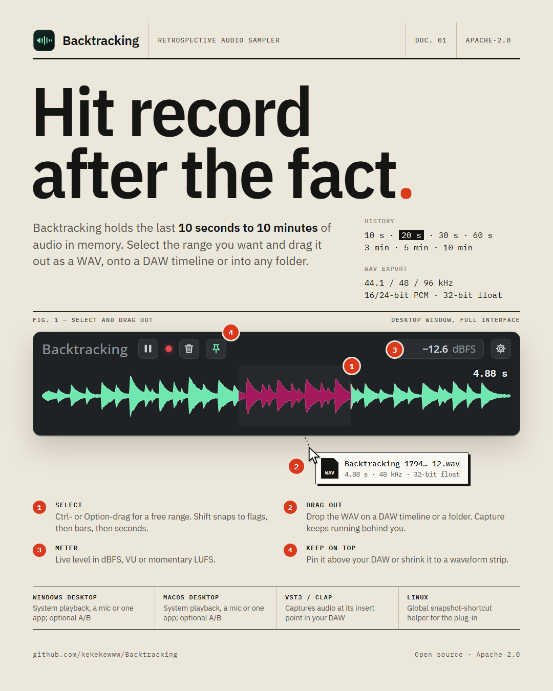
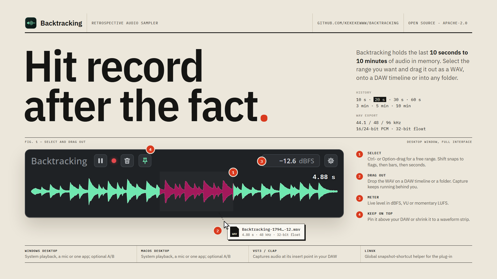
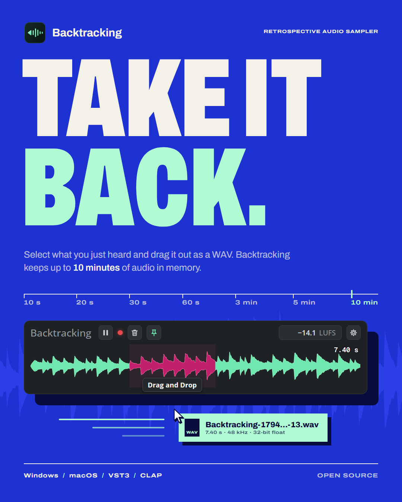
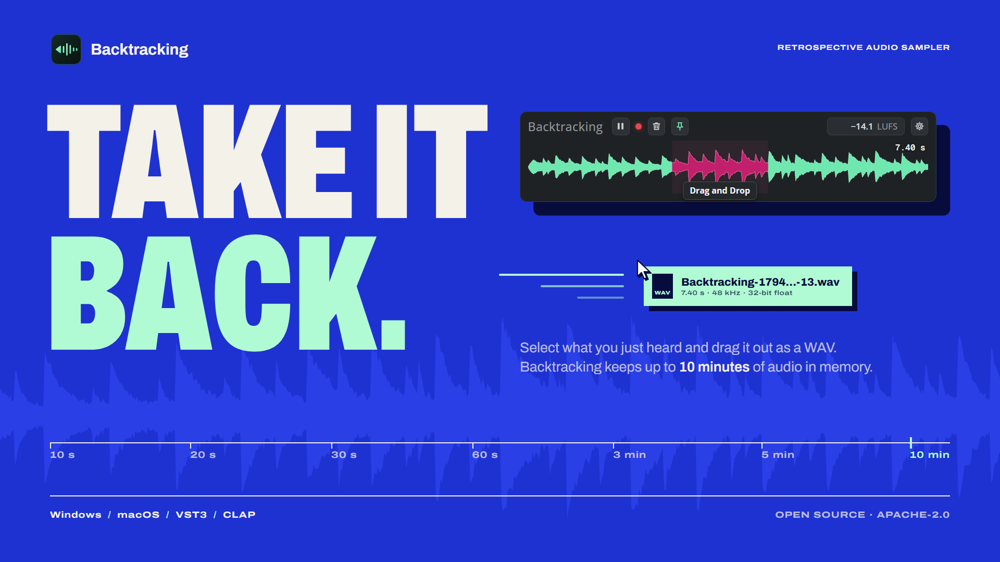

Backtracking: three visual directions
Style frames for picking one direction before full production. Each direction has a 1080×1350 poster and a 1920×1080 hero/title frame. All three use the same UI mock-up, built from screen recordings of the real app (shared/bt-panel.js), and the unaltered app icon. Full notes are in A-notes.md, B-notes.md and C-notes.md.
Evolved
The existing kit, tightened. Same dark green, mint and pink, now set in one typeface family, with a real-app panel, a time ruler that ends at "now", and a glow only behind the product.
Motion: slow and nocturnal. The waveform scrolls in, the selection wipes in pink, and the WAV drifts out with a soft ease.
- Palette
- #050D0B#11362B#86EFBD#FF6AA8#EEF6F2#93ABA1
- Type
- Geist (headline 640, −0.04em) + Geist Mono (labels)
- zh-TW
- Noto Sans TC Medium/Bold: workable, neutral match
- Copy
- “What you just heard, straight into your DAW.”


Field Manual
A precise instrument on bone paper: ink, rules, a numbered figure with a legend, and spec rows. The only signal colour is the app's own REC red. The dark panel is the one dark object on the page.
Motion: diagrammatic. Rules draw in, markers pop in on cue with their legend lines, and moves are quick and linear with hard stops.
- Palette
- #ECE7DB#151513#55514A#C3BAA5#D93A1E
- Type
- IBM Plex Sans (condensed 85 %, 600) + IBM Plex Mono
- zh-TW
- IBM Plex Sans TC: same family, the strongest bilingual fit
- Copy
- “Hit record after the fact.”


Rewind
Record-sleeve loudness. A flat ultramarine field carries giant ultra-condensed caps, with the icon's mint as the only highlight. The real History options form a tape-counter scale, and objects carry hard ink shadows.
Motion: punchy and on the beat. The scale rewinds, the words slam in on cuts, and the mint WAV slab shoots out with streaks.
- Palette
- #1E32D2#2A3FE6#070C3D#F4F1E8#B0FBD3
- Type
- Archivo variable (wdth 62 black caps / 125 labels / 100 body)
- zh-TW
- Noto Sans TC Black: workable, but needs its own line breaks
- Copy
- “Take it back.”

